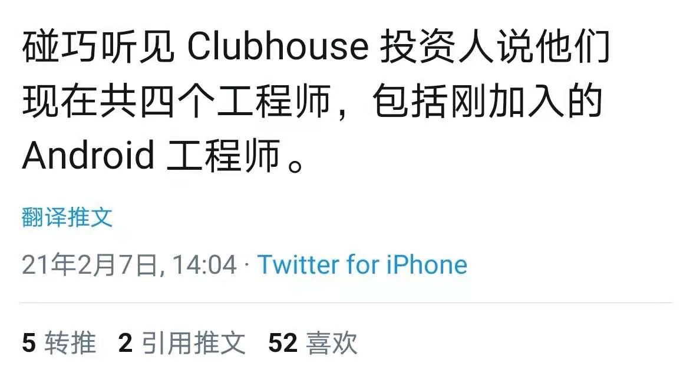

clubhouse的同温层
王福强
其实， clubhouse玩了下，也没啥意思，你愿意听那么多观点吗？ 我反正不愿意了…
但今天这篇其实也是观点，所以各位看官自己看着办咯~
很多自媒体随着clubhouse的火热开始鄙视这个群体，那个群体了， 开始自己毛也没干，拿成功的产品与新兴的产品来对比了， 拿新产品的用户开涮了，最典型的是把clubhouse的用户群归纳成几类人，显得自己好像多么英明神武了， 其实我觉得大可不必。
这个世界， 同温层从来就是现实， 不信，把你扔到不同温层里去让社会毒打爱好者毒打一下，你也就不会嘲笑同温层了，因为你会向往回归同温层， 只有在同温层里，你才能感受到舒适和被认同，在所有其他不同温层里， 你丫能感受地只有耗费心力、脑力、体力以及各种精力来抵抗那些不舒适，哪里还会有那种自己圣人一般胸怀宽广洞穿一切的优越感？！
关注点儿有意思的东西不好吗？
比如， clubhouse的投资人说clubhouse现在就四个开发人员，也只是刚刚才新入职一个android， 这样的小团队能做出这种现象级的产品， 背后的逻辑是什么？

另外， 当大家都在盯着toB的时候，有没有发现现在很多几个人的小团队都在搞toC，而且还搞得挺像模像样？ 小团队会不会成为此后一段时间现象级的常态？ 毕竟云、PaaS和SaaS的普及，已经让产品的验证迭代和交付条件变得极其便利快捷了，Remote+一个连接者或许都能搞出一个成功的产品和产业也说不定吧？（clubhouse不也是依托声网吗？ 国内不是一天就搞出个类似产品吗？背后不都是基础设施的成熟为依托吗？）
you are what you do, 天天嚼舌根子不会让自己显得英明神武，自己跟自己念念叨叨其实倒也无可厚非，比如我，现在只能跟自己念叨，不想打扰别人 1，哈哈哈
「为AI疯狂」星球上，扶墙老师正在和朋友们讨论有趣的AI话题，你要不要⼀起来呀？^-^
这里
- 不但有及时新鲜的AI资讯和深度探讨
- 还分享AI工具、产品方法和商业机会
- 更有体系化精品付费内容等着你，加入星球(https://t.zsxq.com/0dI3ZA0sL) 即可免费领取。(加入之后一定记得看置顶消息呀！)

存量的时代，省钱就是赚钱。
在增量的时代，省钱其实是亏钱。
避坑儿是省钱的一种形式，更是真正聪明人的选择！
弯路虽然也是路，但还是能少走就少走，背后都是高昂的试错成本。
订阅「福报」，少踩坑，少走弯路，多走一步，就是不一样的胜率！